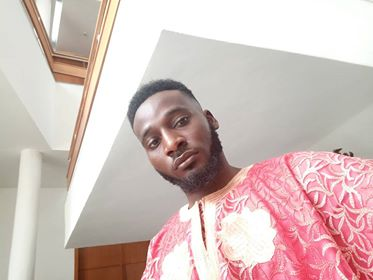

|  |
UBIO OBU (CEO)
Has a Bsc in Chemistry from the University of Calabar, Diploma in business management from African mangers institute and diploma in Agri-business from Umudike university of Agriculture and recently obtained a diploma in Artificial intelligence from SIITGO. Previously Co-founded Campus food hub and a co-founder at voice of reason.
|
 |
VIVIAN OFRE (COO)
Has her Bsc in Geo-physics and a masters in soil geology. A previous founder of kid Recycle and Co-founder at Voice of Reason.
|
|
EDINYANGA OTTOHO (Software Engineer)
A pretty amazing teen. He is presently a 100 level undergraduate of Computer Engineering in the University of Uyo, Uyo. He is a full-stack web developer and has worked on different projects. He is a co-founder at 247naija forum.
|
 |
VICTORY OKHORMHE (Software Engineer)
He is a teenage front-end developer with credible UI/UX skills. He is also presently a 100 level undergraduate of Computer Engineering in the University of Uyo, Uyo. He is a co-founder at 247naija forum.
|